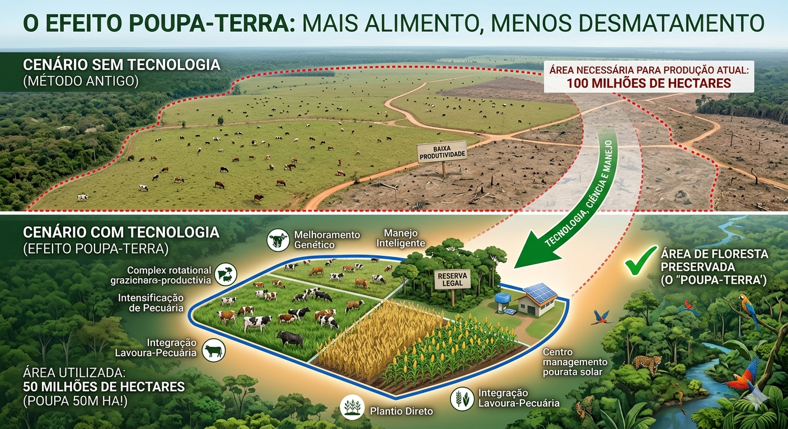

Efeito Poupa-Terra
"Bem-vindo ao meu projeto! O objetivo deste trabalho é apresentar o conceito de 'Efeito Poupa-Terra', um estudo comprovado pela Embrapa. Mostraremos como é possível aumentar a produtividade no mesmo espaço de terra utilizando tecnologia e práticas sustentáveis, eliminando a necessidade de novos desmatamentos."
Dúvidas sobre o projeto? Clique aqui
O que é?
O efeito poupa-terra ocorre quando o aumento da produtividade (via tecnologia, ciência e melhores práticas de manejo) permite produzir muito mais alimentos, carne ou biocombustíveis na mesma quantidade de terra — ou até em áreas menores.

Manejo Inteligente
O manejo inteligente utiliza dados e monitoramento constante do solo e do gado para garantir que o pasto seja aproveitado da melhor forma, sem degradar a terra.
Plantio Direto
Consiste em plantar sobre os restos da colheita anterior. Isso protege o solo contra erosão, mantém a umidade e diminui a necessidade de fertilizantes químicos.
Integração Lavoura-Pecuária
É o "pulo do gato" do Poupa-Terra: no mesmo terreno, o agricultor alterna o plantio de grãos com a criação de gado, recuperando o solo naturalmente e lucrando em dobro.